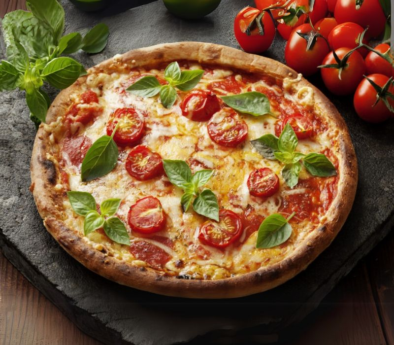
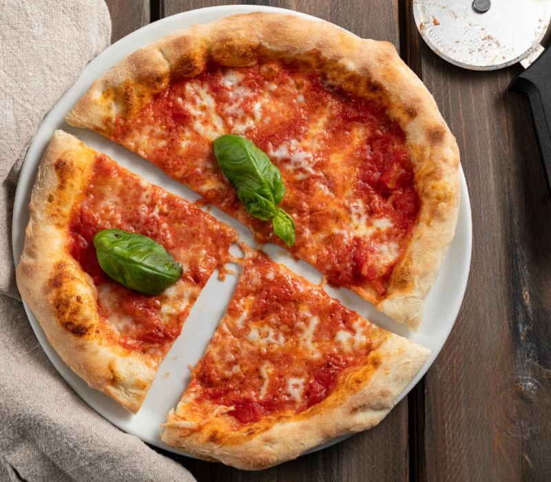

A pizza, um dos pratos mais amados e consumidos em todo o planeta, possui uma história rica e fascinante que remonta a séculos atrás. Suas origens humildes nas ruas de Nápoles, na Itália, evoluíram para um fenômeno gastronômico global, apreciado em suas inúmeras variações e sabores.

Acredita-se que os antecessores da pizza moderna eram pães achatados, frequentemente cobertos com ervas e azeite, consumidos por diversas culturas no Mediterrâneo antigo. No entanto, foi em Nápoles, no século XVIII, que a pizza começou a tomar a forma que conhecemos hoje. Era um alimento acessível e popular entre os trabalhadores pobres, vendido em barracas de rua e preparado com ingredientes simples e locais.
Um momento crucial na história da pizza ocorreu em 1889, quando o rei Umberto I e a rainha Margherita visitaram Nápoles. Cansados da culinária francesa sofisticada, pediram para experimentar as pizzas locais. O pizzaiolo Raffaele Esposito criou três versões, sendo uma delas em homenagem à rainha, utilizando as cores da bandeira italiana: manjericão (verde), mussarela (branco) e tomate (vermelho). Essa pizza, batizada de Margherita, tornou-se um símbolo e impulsionou a popularidade do prato.

Com a emigração italiana no final do século XIX e início do século XX, a pizza viajou para outros países, especialmente para os Estados Unidos. Inicialmente, era consumida principalmente por comunidades italianas, mas após a Segunda Guerra Mundial, ganhou popularidade entre o público em geral. A adaptação da pizza ao paladar americano, com a introdução de novos ingredientes e estilos, como a pizza de pepperoni e a deep-dish de Chicago, contribuiu para sua disseminação global.
Hoje, a pizza é um prato versátil e democrático, com inúmeras variações regionais e criativas. De Nápoles aos confins do mundo, ela continua a ser um símbolo de convívio, sabor e prazer gastronômico. A história da pizza é uma celebração da simplicidade que se transforma em algo extraordinário, unindo culturas e paladares ao redor de uma mesa.
Gusttavo Lima
Rapaz... eu achava que entendia de pizza, mas depois de ler isso aqui vi que é coisa de raiz mesmo! História massa demais, parabéns! Agora só falta combinar com um chopp e um modão no fundo!
Responder
Lu do Magalu
Genteee, que conteúdo delícia! 🍕💛 Amei conhecer a origem dessa maravilha que salva nossos dias corridos! Já pensou? Da Nápoles antiga direto pro app — e agora pra minha mesa com a Copacabana! Viva a pizzaaa!
Responder
Gustavo Miranda
Lu, você arrasou no comentário, viu? Pizza é mesmo aquela coisa que salva a gente nos dias corridos, né? Da Nápoles antiga direto pra nossa Copacabana — só alegria e muito sabor! Tô feliz demais que curtiu essa história e essa delícia. Bora marcar um dia pra gente trocar ideia e, claro, devorar umas pizzas juntos! Viva a pizzaaa!
Responder
Wesley alemão
Mano, pizza tem história, coisa de raiz mesmo. Veio lá de longe, simples, feita pra galera que queria comer bom e rápido. Aí hoje tá todo mundo pirando, e a Copacabana manda bem demais, pizza gostosa que respeita essa tradição. Eu curto demais, é daquele sabor que não esquece, tá ligado?
Responder
Cremosinho
Ô, vou te falar, pizza é tipo história de família, mano. Começou lá atrás, simples, e hoje é festa em qualquer roda. Na Copacabana, tu sente que eles não tão de brincadeira, faz aquele rango com respeito pela história. E ó, se reclamar, chama que eu tô na área pra dividir a próxima!
Responder
Matuê
Pizza é cultura, tem uma história que atravessa tempo e lugar. Simples no começo, hoje é símbolo do sabor que todo mundo quer. Eu curto a vibe da Copacabana, porque eles sabem manter essa pegada, sem perder a essência. Cada mordida é mais que comida, é memória.
Responder
Rony
Pizza é daquelas coisas que junta geral, né? Tem história boa, veio de longe, mas o que importa é o sabor e o carinho que colocam. Eu curto a Copacabana porque lá a pizza é feita pra ser curtida, sem frescura, só alegria mesmo. Melhor lugar pra chamar a galera e curtir.
Responder
Raphael Veiga
Mano, pizza tem uma história massa, veio lá de longe, simples e verdadeira. Hoje, é aquele clássico que todo mundo ama. Na Copacabana, a gente sente esse respeito pelo sabor de verdade, aquele rango feito com calma e coração. Pra mim, não tem nada melhor que juntar os amigos e curtir uma pizza assim, com história e sabor.
Responder